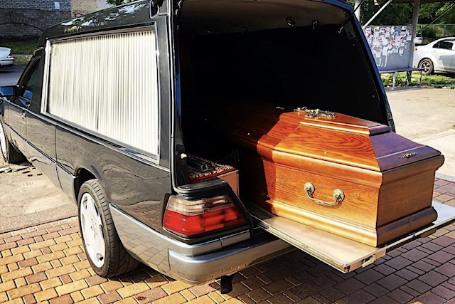

2019 Market Study Reveals Suprising Truth About UK Crekations And Burials

We plan our careers. We plan our holidays. We try to prepare for many
things throughout our life. But there's one important matter that most
of us fail to get ready for.
It's something that's certain to come and cannot be avoided...
Death.
A recent study from YouGov found out that only 6% of adults set up a prepaid funeral or cremation
plan¹.
This creates a problem for their family and loved ones.
Because the time comes and planning is no longer an option, many end up stressed with years of debt because
of all the costs on their shoulders.
Bad actors in an unregulated funeral industry have been milking this for decades
. Because they know they can charge any rate they want, the prices have risen dramatically over the
years.
In fact, the cost of the average funeral in the UK has increased 122% in the last 15 years In 2018,
the total cost of dying was an alarming £9,204 per person⁵.
But all these insanely high costs can be avoided.
How?
By preparing for a funeral or cremation ahead of time using a
present plan. . It’s a lot easier than you think and only takes a couple minutes to do.
It may not be a motivating task, but it’s worth it. And by not taking care of this in advance, it may have
serious financial consequences and cause unnecessary stress
to your loved ones.
Funeral coverage (if shopped properly) provides a preset plan that doesn’t increase over time. With payments
as small as 45p* a day, it is one of the smartest ways to save money.
With so many funeral coverage options to choose from — how can you know which one is the most convenient?
It’s more important now than ever to lock in a rate that won’t grow over time.
Projections published by the UK government in a 2019 Funerals Market Study found that funeral costs
increased twice as fast as inflation². With proper coverage, your relatives will be safe from this
burden.
The good news is the internet is helping a lot of people save money by connecting consumers directly with
funeral and cremation providers.
This new method offers cost-effective plans that allow you to leave money as a cash gift or to cover
funeral costs.
There's no medical exam required or need to get your health checked to qualify. Coverage is guaranteed for
UK residents of all ages.
To search for a plan, simply follow these steps to avoid bargain shopping, talking to endless insurance reps that are trying to sweet talk you into coverage you don’t need, or wasting money.
Step 1) Select your age
Step 2) On the next page, complete the 60 second questionnaire , and a funeral and cremation specialist will help you compare the best rates in your area to possibly save hundreds or thousands.